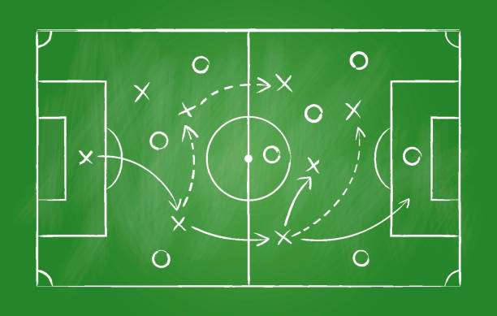
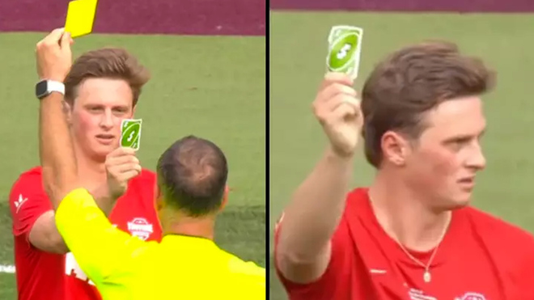
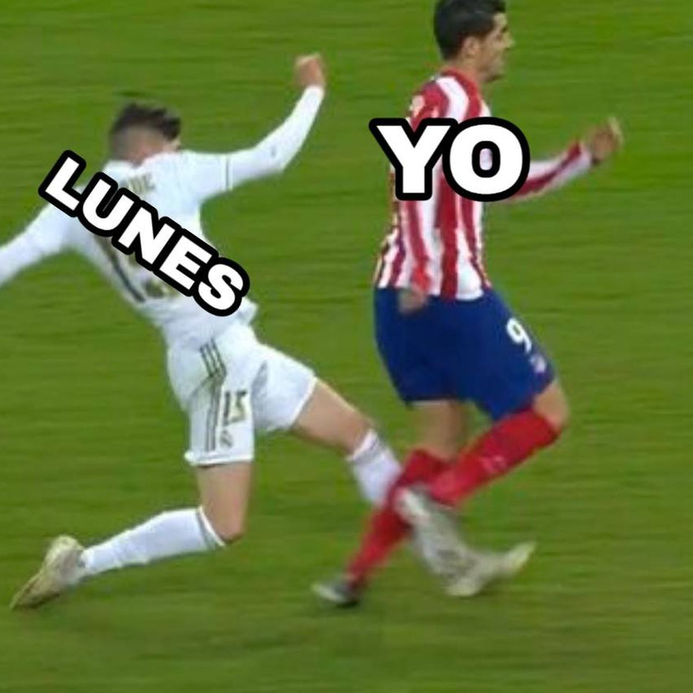
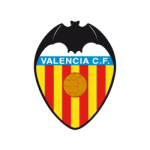
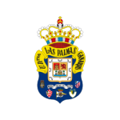

Date de alta
Sobre Football Manager
Este football manager es completo en cuanto a recursos que proporciona para tu equipo pueda llegar hasta la cima. Podras fichar jugadores y tu entrenador para tu equipo y competir en cualquier liga que se dispute. Tu tienes la elección total sobre tu equipo, para poder destituir tu entrenador, transferir uno de tus jugadores, ver las estadisticas de tu equipo o dar de baja tu equipo.

Noticias

Le mando a callar al arbitro con su tarjeta amarilla con la poderosa carta del reverso. Tremendo ganador es este tio

El jugador "Yo" recibe tarjeta roja por hacer perder el tiempo con su actuación y se le da bola para el jugador "Lunes De la semana", menudo sinvergüenza de jugador.
Partidos destacados

Real Madrid CF
3-0
Valencia CF

RCD Celta de Vigo
3-2
UD Las Palmas FC
